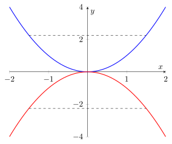

Convexity and Concavity¶
Definition¶
Let be an interval and let be a function. The function is convex on if, for all and every
and concave on if the inequality is reversed. If always gives a strict inequality, we say that is strictly convex or strictly concave.
The point lies between and which is why the domain has to be an interval.
Interpretation¶
Convexity and concavity describe the shape of a function by comparing its values with linear interpolations between points.
They capture whether the graph of a function bends upwards or downwards over an interval.

Key Results¶
- Tangent/secant line test. For a convex graph, secants lie above the curve and tangents lie below it; for a concave graph both comparisons reverse.
- A differentiable function is (strictly) convex on exactly when is (strictly) increasing on and (strictly) concave exactly when is (strictly) decreasing.
- is (strictly) convex if and only if is (strictly) concave.
- Necessary condition. If is twice differentiable at and convex on some interval then if it is concave there, then
- Sufficient condition. If on then is strictly convex there; if then strictly concave; and is a linear function on if and only if
- Complete criterion. For twice-differentiable is convex on if and only if throughout, and concave if and only if throughout.
- Strict inequalities are sufficient for strictness but not necessary: is strictly convex although
Examples¶
- The function is strictly convex on since
- The function is strictly concave on
- The function is convex although it is not differentiable at it is not strictly convex.
- The function is strictly convex on and on separately, but not on which is not an interval.
Prerequisites¶
Related Concepts¶
Sources¶
- Math I: Calculus · Lecture 9
Aliases: curvature
Last updated: 30 August 2026 02:54